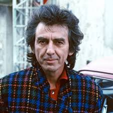
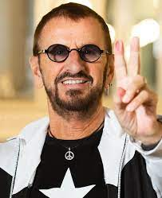

The Beatles were a British quartet formed in Liverpool in 1960. The members that made up the band was John Lennon (rythm guitar, vocals), Paul McCartney (bass, vocals), George Harrison (lead guitar, vocals) and Ringo Starr (percussion).
They were formerly called the Silver Beatles or the Quarrymen. They were also known as the Fab Four. Earlier members consisted of Stuart Sutcliffe (orignal bassist) who had left the band in 1961 and Pete Best (original percussionist) who had been replaced in 1962. They performed many concerts at The Cavern Club in Liverpool which helped with the growing popularity throughout England.
The Betles' first manager, Allan Williams, arranged for them a residency in Hamburg while also performing in various places.
It was at The Cavern Club where Brian Epstein had spotted them. In 1962, Epstein became the band's official manager.That same year of 1962, The Beatles' first single 'Love Me Do' reached number 17 on the Record Retailer chart. The bad then went back to Hamburg for the final residency with a promise to have a new look and to become much more serious about their music careers.
In 1963 The Beatles came back dressed in sharp-suits and went on to record 'Please PLease Me' which reached number 1 on the charts following rapid success and popularity in the UK. A number of concerts around Europe soon followed, with large crowds of fans filled the streets & venues.
The Beatles went on to perform on The Ed Sullivan Show in the USA which was viewed by over 73 million poeple. Their success and popularity earned then the top five places on the Billboard Top 100.
The band had then went on four years of constant performing, recording, working and touring. Their last performance in San Fransisco 1966 before taking a break.
John Winston Lennon was born on the 9th of October, 1940, in Liverpool, England. From the early age of 4 years old, his parents separated and he was sent to live with his Aunt Mimi.
His father was not present in his birth and not so present when he was a child either.
Lennon's mother, Julia, remarried but would regularly visit him and Mimi. She taught him how to play the piano and banjo. Then purchased Lennon's first ever guitar.
Sadly, Julia's life was taken in July 1958 when an off-duty police officer fatally struck her with a car. This would be one of the most traumatic and tragic life events he would have.
Lennon then met Paul McCartney in 1957.
James Paul McCartney was born on the 18th of June, 1942, in Liverpool, England.
His father was a musician who played the trumpet and piano. His mother was a midwife.
In 1955, the McCartney family moved to the Allerton district of Liverpool in a council house, 20 Forthlin Road. It was bought by the National Trust in 1995 and now remains as a popular tourist attraction.
In the year 1956, McCartney's mother passed from an embolism following a mastectomy after suffering with Breast Cancer.
This led to McCartney and Lennon's bond.
McCartney and his brother was encouraged by their father to be musical. He took formal music lessons for a hile but soon preferred to learn by ear.
George Harrison was born on the 25th of February, 1943, in Liverpool, England. His father was a steward for a merchant navy and then became a bus conductor. His mother was a clerk for a local grocery shop. He began playing the guitar during his early teens while in secondary school. Harrison then met McCartney in 1958.
Sir Richard Starkey was born on the 7th of July, 1940, in Liverpool, England. His parents both worked in a bakery but then divorced when he was still a young child. He often fell ill as a child, spending a year in hospital after complications with a burst appendix at the age of 6 years old. At age 13, he got diagnosed with pleurisy and spent two years in a sanatoriium. He was introduced to the drums by a health worker who gave children musical instruments to amuse them while in medical treatment. Starr then went on to replace Pete Best in 1962.

Today the Beatles still remain an iconic rock-band. They still continue to inspire the young and old of all ages. Their music trully has touched people.
Many musicians today would still have roots going back to the Beatles early inspiration. Their style of music and grown popularirty is still being studied today in many parts of the world.
They have been named 'the greatest performing musical act of all time' by Billboard magazine with their albums still continueing to chart to this day.
The death of John Lennon shook the world back in December of 1980 when he was shot four times in the back by a 'fan' named Mark David Chapman who Lennon has signed an autograph for that evening. He was then rushed to Roosevelt Hospital in a policar car and was later pronounced dead on arrival.
To this day, Lennon is repected by his fans. He was cremated and his ashes were scattered in are now called 'Starberry Fields' in New York City's Central Park.
George Harrison died on November 2001. He had been fighting a battle with lung cancer but soon left. He was a spiritual person who loved and only had one thing in mind: "to love one another" as said by longtime friend Gavin De Becker.
He too was cremated as his ashes were scattered in the Ganges and Yamuna river in India.
With the remaining two Beatles, Paul McCartney and Ringo Starr, they have remained in contact over the years. They have both succeeded in their solo careers and still continue to make an impact on the world today.